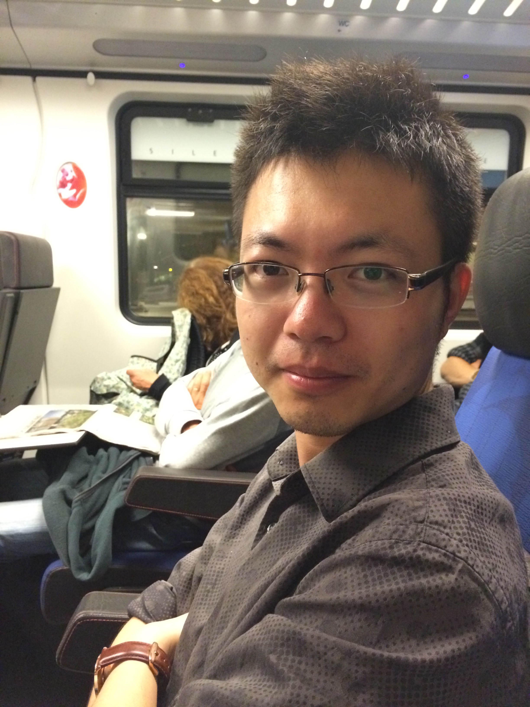

I am a senior researcher in the eXascale Infolab at the University of Fribourg. I obtained my PhD in 2017 from Delft University of Technology, Netherlands, where I worked in the Web Information Systems group. Prior to that, I completed my master program (with cum laude) in Eindhoven University of Technology, Netherlands, in 2013. Before, I received my bachelor degree from Zhejiang University, China, in 2011. During my study, I worked as a research intern in Philips Research, Eindhoven, Netherlands, and as a machine learning scientist in Amazon, Seattle, US.
My research focuses on building effective Human-Machine Loop Systems that combine human intelligence with machine scalability to solve complex tasks at scale. The topic lies at the intersection of human computation, machine learning, recommendation, and user modeling. My work finds its natural application in human computation, recommendation, question answering, and urban computing systems.